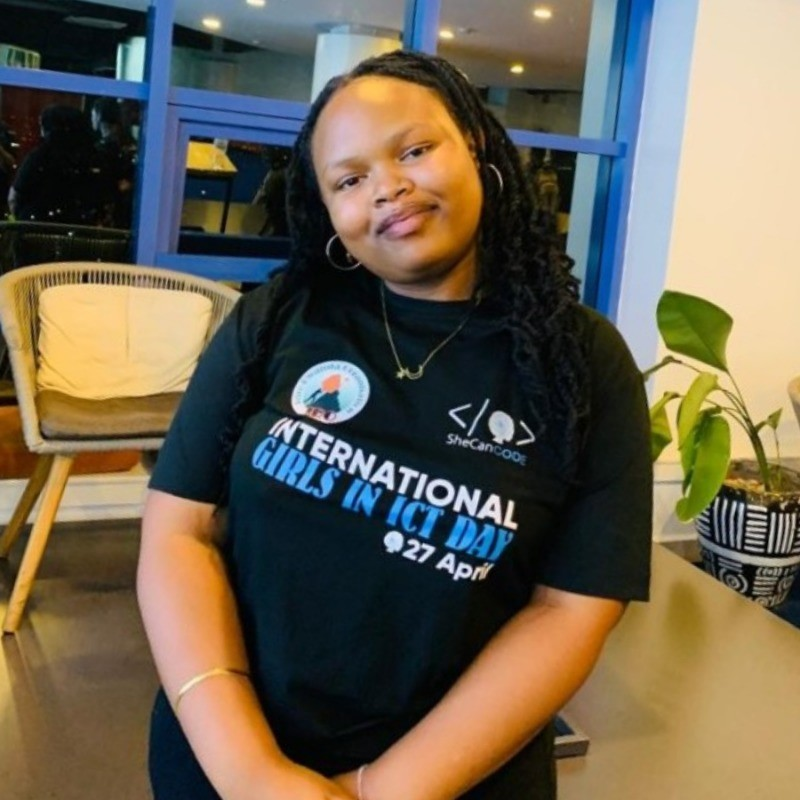

Introduction

Slack Name: Imanishimwe Immaculee
Slack Email: mariemaccu7@gmail.com
Current Date and Time
Current Time (UTC):
Current Day:
Goals
-
Master Frontend Development
I aim to gain a deeper understanding of JavaScript, including ES6+ features, asynchronous programming, and advanced concepts. I plan to become proficient in popular frontend frameworks and libraries such as React.js, Vue.js, and Angular. I will focus on mastering responsive design principles to ensure my websites function seamlessly across all devices. Ensuring all my web projects are accessible to users with disabilities by adhering to WCAG standards. Learn Backend Development
Learn and build applications using Node.js and Express to handle server-side logic. Gain proficiency in database management systems like MongoDB and SQL databases. Develop RESTful and GraphQL APIs to integrate frontend and backend systems.Soft Skills
Improve my communication skills to effectively collaborate with team members and stakeholders. Enhance my problem-solving abilities by tackling complex coding challenges and projects. Develop better time management skills to balance multiple projects and meet deadlines effectively.